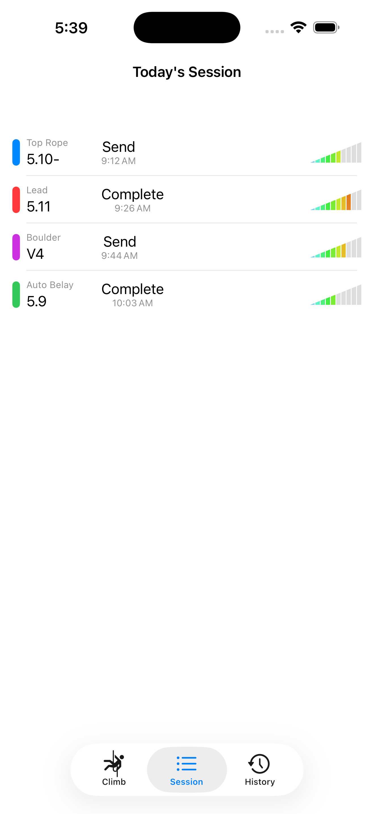
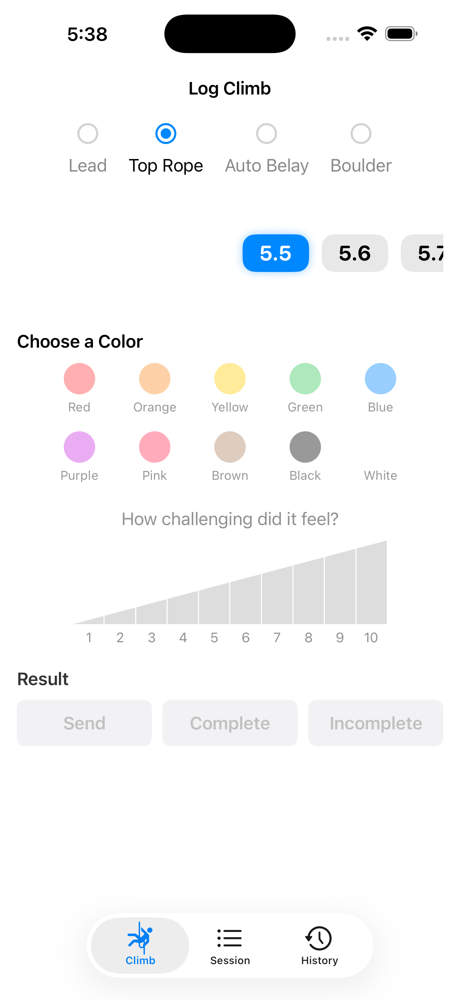

1
Capture the route
Record lead, top rope, auto belay, or boulder climbs with grade, route color, and result.
Indoor climbing logbook
A quiet, fast logbook for indoor climbing sessions. Record the grade, route color, result, and effort while you climb, then review today or look back by day.



Gym Climb keeps the common indoor climbing details close at hand so your phone or watch does not become the workout.
Record lead, top rope, auto belay, or boulder climbs with grade, route color, and result.
Add RPE from very light to maximal so you can see how hard the session really felt.
Your current session stays easy to scan, and past climbs are grouped by day for quick review.
Use the iPhone app for fuller sessions or the Apple Watch app when you want a fast step-by-step logging flow between attempts.
Gym Climb does not require an account, does not include third-party advertising, and does not track you across apps or websites. Your climbing log is stored on device and may sync through your private iCloud account when available.